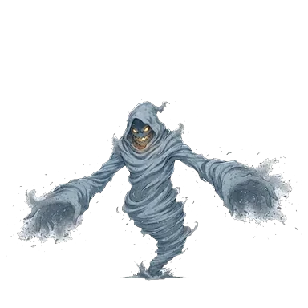
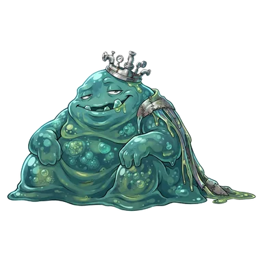
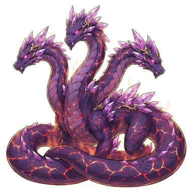

1快速開始
這是知識庫上的一層遊戲。內容和平常讀的文件一模一樣，只是多了經驗值、關卡和魔王，讓你知道下一步該讀什麼。
- 打開遊戲模式：按首頁上的「開啟冒險模式」，或在任何頁面網址後面加上
?rpg=1，例如 map.html?rpg=1。同一個瀏覽器之後都會記得；要關掉，按角色頁的「關閉冒險模式」或加?rpg=0。 - 建立角色：選一個職業，也就是你的部門。職業決定你的「必讀清單」和地圖路線。
- 照著「下一個任務」讀：首頁和地圖上會提示下一份該讀的文件。讀完一節就拿經驗值。
- 打章節挑戰：每節讀完，頁面上有該節的小怪戰。答對 80% 就算通過。
- 打倒區域魔王、升階：一個區域的必讀文件都通關後，挑戰魔王；贏了就升一階。
2怎麼變強
八個職業
 守護者品質保證部 QA
守護者品質保證部 QA 補給官倉儲部
補給官倉儲部經驗值從哪來
| 做什麼 | 經驗值 |
|---|---|
| 讀完一節 | +10 |
| 通過一節的章節挑戰（答對 ≥ 80%） | +30 |
| 整份文件通關 | +50 |
| 複習突擊、每日巡邏答對 | 每題 +15 |
| 第一次打倒區域魔王 | +100 |
| 第一次打倒精英魔王 | +80 |
| 第一次帶剋制技能打贏魔王 | +50 |
| 第一次打倒文件守關者 | +40 |
| 魔王、精英、守關者戰中，第一次答對的題目（輸了也算） | 每題 +3 |
等級和階級不一樣
- 等級（Lv）：經驗值累積就會升，代表你讀了多少。
- 階級：見習 → 初階 → 中堅 → 專家，代表你的職業必讀清單完成到哪。每一階要把該區的必讀文件都通關，而且打倒那一區的魔王。
- 等級里程碑：升到特定等級會送東西，只送一次、不影響分數。角色頁經驗條下會寫下一個里程碑。
| 等級 | 獎勵 |
|---|---|
| Lv 3 | 2 個素材（補你最少的那種） |
| Lv 5 | 1 顆魔王結晶＋稱號「勤學者」 |
| Lv 7 | 2 個素材 |
| Lv 10 | 1 顆魔王結晶＋稱號「博覽者」 |
| Lv 13 | 3 個素材 |
| Lv 15 | 1 顆魔王結晶＋稱號「百科行者」 |
| Lv 20 | 2 顆魔王結晶＋稱號「活字典」 |
等級稱號只在你還沒有主題稱號時顯示；有主題稱號就優先顯示主題稱號。
- 文件卡：讀完或通關一份文件就收進圖鑑。章節越多，卡越稀有（N / R / SR / SSR）；每節第一次就全對，卡會閃亮。
3戰鬥規則
所有戰鬥都是選擇題，回合制：
- 答對：敵人扣 1 滴血。
- 答錯：你扣 1 顆心。
- 心的數量 = 80% 及格線允許答錯的題數 + 1。例如 10 題的戰鬥能錯 2 題，所以有 3 顆心。
- 不管輸贏，每題按完都會顯示解說和出處（到小節），可以直接回原文看。
| 戰鬥 | 題目 | 在哪裡 |
|---|---|---|
| 章節挑戰（小怪） | 這一節的全部題目 | 每份文件的各節頁面上 |
| 守關者（選打） | 從整份文件題庫跨章節隨機 5 題 | 文件每一節都通過後的隔天，出現在地圖和任務卡上 |
| 區域魔王 | 從該區題庫隨機 10 題 | 地圖上該區的終點 |
| 精英魔王 | 從主題題池隨機 10 題 | 地圖上的精英群島 |
| 複習突擊 | 錯題本的題目，或 7 天前通過的章節 | 打開首頁、地圖或角色頁時跳出，一天一次 |
| 每日巡邏 | 最多 5 題：先出該複習的錯題，再出讀過的章節（最久沒複習的先） | 首頁和角色頁的「出發巡邏」，一天一次，不會被擊退 |
狀態異常
章節挑戰、魔王、精英和守關者戰中會出現狀態。狀態只動心和護盾，不改分數，及格線一樣是 80%。錯題練習和每日巡邏沒有狀態。
| 狀態 | 怎麼觸發 | 效果 |
|---|---|---|
| 對手中毒 | 連續答對 2 題 | 每回合毒發一次，每毒發 2 次你回 1 顆心。你答錯，牠就趁機解毒。 |
| 對手麻痺 | 連續答對 3 題 | 直到戰鬥結束，你每次答錯有 25% 機率牠動不了，不扣心。 |
| 對手睡眠 | 帶剋制技能打魔王（弱點擊破） | 睡著時你答錯不扣心；每回合有 1/3 機率醒來。 |
| 你中毒 | 連續答錯 2 題 | 每回合先侵蝕 1 面護盾；沒有護盾時，每 2 回合扣 1 顆心。答對 1 題就解毒。 |
你中毒時，毒只會扣「多出來的心」：還有機會到 80% 的時候，毒不會把你逼到被擊退，也不會扣掉最後一顆心。
屬性相剋
每個部門技能有一項狀態專長，每隻魔王和精英對某些狀態免疫、抵抗或特別容易中招。第一次交手前，對手的抗性是未知的；打過一次，抗性就會記進角色頁的情報圖鑑，之後開戰前的技能選單也會顯示「情報」。換技能就能配出不同打法。章節挑戰和守關者戰用你的主技能。
| 技能 | 專長 |
|---|---|
| 品管系、數位系 | 毒專長：答對 1 題就讓對手中毒（平常要連對 2 題） |
| 工程系、技服系 | 麻痺專長：連對 2 題就麻痺，動不了機率 40% |
| 生產系、法規系 | 催眠專長：開場就讓對手睡著，但睡得淺，醒來機率加倍 |
| 品保系 | 封印護體：你不會中毒；第一次連錯 2 題時，改得 1 面護盾 |
| 倉儲系 | 急救補給：第一次連對 3 題回 1 顆心，解毒時也回 1 顆心 |
| 對手 | 情報 |
|---|---|
| 微粒魔 | 免疫中毒、容易麻痺 |
| 生物膜王 | 抗中毒（每 3 回合才回心）、抗睡眠（容易醒） |
| 內毒素龍 | 免疫中毒、抗麻痺 |
| 孢子騎士 | 抗中毒、容易睡眠（醒來機率 1/5） |
| 裂隙幽靈 | 免疫麻痺 |
| 竄改魅影 | 容易麻痺 |
| 混淆魔 | 容易中毒（中毒後每回合幫你回心）、抗睡眠 |
| 溶出妖 | 免疫中毒、容易麻痺 |
| 溫度巨人 | 容易睡眠、容易麻痺 |
每種專長對普通對手的幫助差不多；差別在對手的抗性。品保系和倉儲系是防守型，不怕任何抗性；其他三種碰到免疫就沒效。例子：打微粒魔帶毒專長沒用，因為牠免疫中毒；換工程系的麻痺專長，加上牠容易麻痺，答錯時有一半以上機率不扣心。
輸了也有收穫
- 新題獎勵：魔王、精英和守關者戰中，每一題第一次答對就 +3 XP，不管這場最後輸贏。同一題之後再答對不會再給，所以重刷同一隻魔王刷不出經驗值，要多看沒碰過的題目。
- 撐完獎勵：魔王或精英戰 10 題全部答完（心沒扣光），不管輸贏都掉 1 個素材，每隻每天一次。
- 守關者：第一次打倒得 +40 XP、2 個素材，地圖上這份文件多一顆守關星（最多 4 星）。為什麼要隔天？剛讀完馬上考，測到的是短期記憶；隔一天再回想，才知道真正記住多少。
4地圖與區域魔王
在 地圖 上，你的職業路線分成三座島。每座島的必讀文件都通關後，終點的魔王才會出現。有些島沒有必讀，而是「任選 3 份」；地圖會先標出 3 份「推薦」關卡（優先挑有題庫的文件，已經通關的也會算進去），照著走就好，其他的是支線，想讀再讀。

微粒魔啟程之島：見習 → 初階
生物膜王修練之島：初階 → 中堅
內毒素龍核心之島：中堅 → 專家弱點與第二專長
把別的部門的必讀文件全部通關，就學會那個部門的技能。每隻魔王怕某些部門的技能，開戰前帶上剋制技能，會多 1 顆心，而且魔王開場就睡著，第一次這樣打贏還有額外經驗值和魔王結晶。
| 魔王 | 怕哪些部門 |
|---|---|
| 微粒魔 | 生產工程倉儲QA |
| 生物膜王 | QC技術服務資訊技術RA |
| 內毒素龍 | QARAQC技術服務 |
5精英魔王（選打）
升到初階後，地圖上的精英群島會散開雲霧。精英魔王跨部門出題，代表針劑廠常見的失效模式。不影響升階，打贏第一次會拿到一個隱藏稱號。有些精英要帶特定道具才能進場。
| 精英 | 主題 | 入場條件 |
|---|---|---|
| 孢子騎士 | 滅菌不足：耐熱芽孢、BI 存活、F0 不夠 | 殺孢劑 |
| 裂隙幽靈 | 容器密封失效：微漏、膠塞、軋蓋 | 無 |
| 竄改魅影 | 資料完整性：共用帳號、補登、改數據 | 追溯工具 |
| 混淆魔 | 錯標、混批、清線不徹底 | 辨識工具 |
| 溶出妖 | 萃取物與溶出物（E&L） | 無 |
| 溫度巨人 | 冷鏈溫度偏離 | 溫度紀錄工具 |
6工坊：素材、裝備、道具
在 角色頁 的工坊裡，用素材打造東西。
素材怎麼來
- 第一次通過某節挑戰：掉一個該主題的素材（共 10 種，例如無菌結晶、濾膜碎片、法典書頁）。
- 複習突擊答對、錯題本裡的題目「隔天」答對：也會掉素材。
- 第一次打倒區域魔王：掉魔王結晶，做高階裝備和道具用。
- 素材不夠時，3 個同種素材可以換 1 個別種（魔王結晶不能換）。
裝備（穿在身上，一直有效）
| 裝備 | 效果 |
|---|---|
| 無菌手套 | 每場戰鬥第一次答錯不扣心（仍算答錯） |
| 防霧護目鏡 | 作答前先顯示這題出自哪一節 |
| 層流披風 | 魔王戰多 1 顆心 |
| 無塵聖甲 | 魔王戰多 2 顆心，小怪戰多 1 顆心 |
| 法典書籤 | 答錯時出現「回原文」，直接跳到那一節 |
| 培養皿護符／晶片懷錶 | 複習突擊多 5 XP／提早到 5 天後出現 |
| 夥伴領巾、結晶外框 | 外觀類 |
特殊道具（每場魔王戰帶一件）
開戰前的選單裡挑一件帶進場。對上它專剋的魔王會多護盾；有些精英一定要帶對的道具才能開打。道具名稱都是通用名詞，用法說明也是真實的 GMP 觀念。
| 對手 | 道具 |
|---|---|
| 微粒魔 | 手持粒子計數器 |
| 生物膜王 | 鹼性 CIP 清潔劑 |
| 內毒素龍 | 去熱原隧道烘箱 |
| 孢子騎士 | 過氧乙酸殺孢劑、汽化過氧化氫產生器（高階） |
| 裂隙幽靈 | 真空衰減測漏儀 |
| 竄改魅影 | 稽核軌跡審查工具、個人帳號權限矩陣（高階） |
| 混淆魔 | 條碼核對掃描器、線上視覺檢測系統（高階） |
| 溶出妖 | 萃取物篩檢分析組 |
| 溫度巨人 | 溫度記錄器、已確效保溫運輸箱（高階） |
7其他系統
夥伴
讀完第一節後，蛋會孵化，從三隻夥伴中選一隻。你每升一階，夥伴就進化一次（共 4 段），閱讀時會陪你說話。
 玻瓶史萊姆→ 琉璃聖獸
玻瓶史萊姆→ 琉璃聖獸錯題本
任何戰鬥答錯的題目都會記下來。要等到隔天以後再答對才算淨化（看完解說馬上重答不算），淨化一題掉一個素材。
複習突擊
每天第一次打開首頁、地圖或角色頁時，可能跳出一題突擊你：優先出錯題本裡該複習的題目，沒有的話就出 7 天前通過的章節。答對 +15 XP 和素材。閱讀文件時不會打擾你。
每日巡邏
突擊是隨機跳一題；巡邏是你自己決定花三分鐘做完一組。首頁任務卡下面和角色頁會出現「每日巡邏」，一天最多 5 題，題目來自你已經通過的章節和錯題本。每題答對 +15 XP，答錯不扣分、會記進錯題本。做完當天算一天連續學習，再掉 1 個素材，當天就不會再跳突擊。沒有讀新東西的日子，也能靠巡邏保住連續天數。
稱號與連續學習
主題稱號會隨著你通關某主題的文件升級；另外還有隱藏稱號，例如連續學習 7 天、同一天通過三份文件、每節第一次就全對累計 5 次。畫面下方的狀態列會顯示連續學習天數。
音樂與音效
開場故事有背景音樂，每一頁換一段旋律；升級、升階、拿到卡片、魔王出場和戰鬥結果會播短短的音效。全部都是瀏覽器即時合成，不用下載音檔。不想聽的話，按開場畫面或戰鬥畫面角落的「♪ 音樂開」切成靜音，之後會記住你的選擇。音效不影響任何分數。
8常見問題
重考時題目會一樣嗎？
題目一樣，但大部分題目的選項順序每次都會重新排，所以要真的懂內容，不能只記「第 3 題選 C」。解說裡有寫到「選項 B」這類字母的題目，選項會保持原本的順序，免得解說對不上。
章節挑戰沒過怎麼辦？
沒有懲罰，看完解說回去讀原文，隨時可以再挑戰。失敗兩次以上後通過，還會拿到隱藏稱號「不屈」。
魔王為什麼還沒出現？
該區的必讀文件要全部通關（每節挑戰都過），魔王才會出現。地圖或角色頁會顯示還差哪幾份。
精英魔王的「開戰」按鈕是灰的？
那隻精英有入場條件。到工坊打造對應類型的道具，開戰前選它帶進場。
為什麼有些文件沒有題目？
題庫還在陸續補。沒有題庫的文件讀完就算通關，所屬區域只靠閱讀就能升階。
會影響正式的訓練紀錄嗎？
不會。遊戲只在你的瀏覽器裡記錄，及格標準和 Quiz Tracker 一樣是 80%。